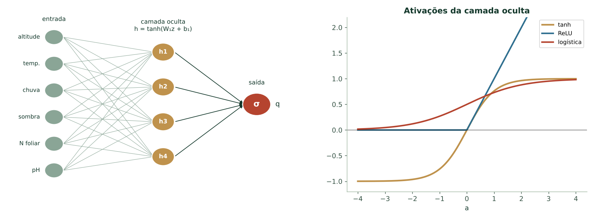
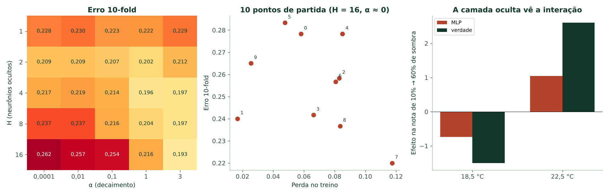

Rede neural multicamadas (MLP)
Uma camada oculta de neurônios não lineares entre a entrada e a saída — a rede constrói as próprias variáveis, ao preço de um problema não convexo.
Comece por aqui
A rede sem camada oculta é a regressão logística: fronteira linear. Acrescentando entre a entrada e a saída uma camada oculta de neurônios com ativação não linear, a rede passa a construir as suas próprias variáveis — combinações não lineares das originais — e a saída é uma logística nessas variáveis novas. Com neurônios suficientes, uma única camada oculta aproxima qualquer função contínua (Hornik, Stinchcombe e White, 1989).
O problema deixa de ser convexo. Pontos de partida diferentes levam a soluções diferentes, e a ficha mostra que, sem regularização, o erro validado varia de 22% a 28% só pela semente. Com decaimento de pesos forte, as dez sementes chegam praticamente à mesma rede.
O que é o MLP
Com \(H\) neurônios ocultos, cada neurônio \(k\) calcula \(h_k=\tanh(b_k+w_k^\top z)\), e a saída é \(q=\sigma(c+v^\top h)\). Os pesos das duas camadas são ajustados juntos, minimizando a entropia cruzada com decaimento de pesos. O gradiente em relação aos pesos da camada oculta é calculado pela retropropagação: a regra da cadeia aplicada de trás para a frente.

| Arquitetura | Parâmetros |
|---|---|
| Sem camada oculta (logística) | 6 + 1 = 7 |
| H = 4 | 6 × 4 + 4 + 4 + 1 = 33 |
| H = 16 | 6 × 16 + 16 + 16 + 1 = 129 |
| Duas camadas, 16 e 8 | 112 + 136 + 9 = 257 |
Pressupostos e como verificá-los
| Pressuposto ou cuidado | Por que importa | Como verificar |
|---|---|---|
| Observações independentes | Validação e perda supõem isso. | Desenho. |
| Entradas padronizadas | Ativações saturam com valores grandes. | scale(). |
| H e decaimento escolhidos por validação | Controlam a flexibilidade. | Grade com validação cruzada. |
| Vários pontos de partida | Mínimos locais. | Repita com sementes; tire a média. |
| n suficiente | Muitos parâmetros. | Compare com modelos mais simples. |
| Convergência | maxit pequeno para cedo. | $convergence no nnet. |
Formulação e cálculo
Em que:
- \(W_1\)
- matriz \(H\times p\) dos pesos da camada oculta
- \(h\)
- vetor das \(H\) ativações ocultas
- \(v,\ c\)
- pesos e viés da saída
- \(\lambda\)
- decaimento de pesos
A retropropagação
Em que:
- \(\delta\)
- erro na saída
- \(\delta^{(1)}\)
- erro propagado para a camada oculta
- \(1-h^2\)
- derivada da tangente hiperbólica
- \(\odot\)
- produto elemento a elemento
Exemplo numérico: um lote, uma rede com H = 3
Lote 11 (fino, \(y=1\)), pesos iniciais sorteados:
| Quantidade | Neurônio 1 | Neurônio 2 | Neurônio 3 |
|---|---|---|---|
| Entrada oculta a₁ | −0,6860 | 1,1136 | −0,1479 |
| Ativação h = tanh(a₁) | −0,5954 | 0,8053 | −0,1469 |
| ∂L/∂v = δ·h | 0,2524 | −0,3414 | 0,0623 |
| δ oculto = δ·v·(1 − h²) | −0,0563 | −0,0777 | 0,0267 |
A saída é \(a_2=0{,}3067\), \(q=\sigma(0{,}3067)=0{,}5761\) e a perda \(-\log0{,}5761=0{,}5515\). O erro de saída é \(\delta=q-y=-0{,}4239\): a rede subestimou a probabilidade de um lote fino. Esse erro é distribuído para trás: cada neurônio oculto recebe \(\delta\) vezes o peso que o liga à saída, vezes a derivada da sua ativação. O gradiente do peso que liga a altitude ao primeiro neurônio é \(\delta^{(1)}_1\times z_{\text{altitude}}=-0{,}0649\) — e a diferença finita, calculada perturbando esse peso em \(10^{-6}\), dá o mesmo −0,0649. É assim que se verifica uma implementação de retropropagação.
Propriedades
- Aproximador universal com uma camada oculta suficientemente larga.
- Problema não convexo: mínimos locais e dependência do ponto de partida.
- O decaimento de pesos é o principal controle de complexidade em redes pequenas.
- Com decaimento suficiente, H importa pouco.
- Interações e não linearidades surgem sem especificação.
- Os pesos não têm interpretação individual.
Como interpretar os resultados
| Elemento | O que informa | Cuidado |
|---|---|---|
| Erro validado na grade H × decaimento | A complexidade adequada. | Repita a validação; é ruidosa. |
Valor da perda final ($value) | Qualidade do ajuste no treino. | Perda baixa ≠ boa generalização. |
| Variação entre sementes | Instabilidade da otimização. | Tire a média de várias redes. |
| Pesos | Pouco: não são efeitos. | Use dependência parcial. |
Como executar no R e em Python
Onde executar o código em Python
Não é preciso instalar nada: o Google Colab é um computador na nuvem, gratuito, que executa Python pelo navegador e já traz as bibliotecas usadas aqui (numpy, scipy e matplotlib).
nnet(), do pacote nnet (Venables e Ripley), ajusta redes com uma camada oculta de neurônios logísticos: size = H, decay = decaimento, linout = TRUE para regressão, maxit = número máximo de iterações (otimização BFGS). O caret faz a busca de size e decay (method = "nnet") e a média de várias redes (method = "avNNet"). Para redes com várias camadas, keras3 ou torch. Em Python, sklearn.neural_network.MLPClassifier e MLPRegressor (hidden_layer_sizes, alpha = decaimento).
library(nnet)
Z <- data.frame(scale(cafe[, c("alt","temp","chuva","somb","nfol","ph")]), fino_f = cafe$fino_f)
set.seed(1)
m <- nnet(fino_f ~ ., data = Z, size = 4, decay = 1, maxit = 2000)
predict(m, Z, type = "raw")[1:5]
Exemplo de aplicação
Contexto dos dados
Os dados são fictícios e foram criados pelo autor: 600 lotes de café, cada um com a nota sensorial (escala SCA, de 70,0 a 86,1) e seis variáveis da lavoura — altitude (600 a 1.500 m), temperatura média (14 a 26 °C), chuva anual (mm), sombreamento (%), nitrogênio foliar (dag/kg) e pH do solo. Um lote é fino quando a nota é 80 ou mais (204 lotes, 34,0%). O processo gerador é conhecido e foi desenhado para ter as duas estruturas que os modelos aditivos não representam: um degrau de +4,6 pontos acima de 1.050 m de altitude e uma interação — o sombreamento melhora a nota quando a temperatura passa de 20,5 °C e a piora abaixo disso —, além de partes suaves em chuva, nitrogênio e pH e um erro de desvio-padrão 1,55. Altitude e temperatura têm correlação de −0,822, como na realidade. Como a verdade é conhecida, sabem-se os dois pisos: nenhum modelo de regressão pode ter erro quadrático esperado abaixo de \(\sigma^2=2{,}4025\), e nenhum classificador pode errar menos que o erro de Bayes, 0,1596. O mesmo conjunto atravessa as dez fichas dos grupos de árvores e de classificadores, o que permite comparar todos os métodos na mesma régua.
Código em R
# Rede neural multicamadas (MLP): exemplo completo ----
# Pacote: nnet (incluído no R). Para redes maiores, keras3 ou torch.
# Dados fictícios: 600 lotes de café (arquivo cafe.csv, pasta scripts/ do site).
# Baixe o arquivo para a pasta de trabalho, ou leia direto do endereço:
url <- "https://cassiushenrique.github.io/ModelosEstatisticos/scripts/cafe.csv"
cafe <- if (file.exists("cafe.csv")) read.csv("cafe.csv") else read.csv(url)
str(cafe) # nota, fino (0/1), alt, temp, chuva, somb, nfol, ph
cafe$fino_f <- factor(cafe$fino, levels = c(0, 1), labels = c("nao", "fino"))
table(cafe$fino_f)
library(nnet)
vars <- c("alt", "temp", "chuva", "somb", "nfol", "ph")
Z <- data.frame(scale(cafe[, vars]), fino_f = cafe$fino_f)
# ---- 1. Uma camada oculta com H neurônios logísticos
set.seed(1)
m <- nnet(fino_f ~ ., data = Z, size = 4, decay = 1, maxit = 2000)
summary(m) # todos os pesos: 6x4 + 4 (camada oculta) + 4 + 1 (saída)
# ---- 2. Escolher H (size) e o decaimento (decay) por validação cruzada
set.seed(1)
d <- sample(rep(1:10, length.out = nrow(Z)))
grade <- expand.grid(size = c(1, 2, 4, 8, 16), decay = c(0.0001, 0.01, 0.1, 1, 3))
grade$erro <- apply(grade, 1, function(g) {
pr <- character(nrow(Z))
for (j in 1:10) {
mj <- nnet(fino_f ~ ., data = Z[d != j, ], size = g["size"], decay = g["decay"],
maxit = 2000, trace = FALSE)
pr[d == j] <- as.character(predict(mj, Z[d == j, ], type = "class")) }
mean(pr != Z$fino_f) })
grade[order(grade$erro), ][1:5, ]
# (o caret faz o mesmo com train(method = "nnet", tuneGrid = ...))
# ---- 3. Mínimos locais: o mesmo modelo, dez pontos de partida
perdas <- sapply(1:10, function(s) { set.seed(s)
nnet(fino_f ~ ., data = Z, size = 16, decay = 0.0001, maxit = 3000, trace = FALSE)$value })
perdas
# Média das probabilidades de várias redes (avNNet, do caret, faz isso)
p_media <- rowMeans(sapply(1:5, function(s) { set.seed(s)
predict(nnet(fino_f ~ ., data = Z, size = 16, decay = 3, maxit = 3000, trace = FALSE), Z) }))
# ---- 4. Regressão da nota (saída linear) e a interação sombra x temperatura
Zr <- data.frame(scale(cafe[, vars]), nota = cafe$nota)
set.seed(1)
mr <- nnet(nota ~ ., data = Zr, size = 8, decay = 1, linout = TRUE, maxit = 5000)
efeito <- function(T) {
base <- cafe[, vars]; base$temp <- T
a <- base; a$somb <- 10; b <- base; b$somb <- 60
sc <- function(x) scale(x, attr(scale(cafe[, vars]), "scaled:center"),
attr(scale(cafe[, vars]), "scaled:scale"))
mean(predict(mr, sc(b)) - predict(mr, sc(a))) }
c(frio = efeito(18.5), quente = efeito(22.5))
A mesma análise em Python, com os resultados
Cole o código em um notebook do Google Colab ↗ e execute com Shift+Enter. Os valores abaixo são a saída desse código.
import numpy as np
# ------------------------------------------------------------------
# Bloco comum às fichas deste grupo: funções auxiliares e dados (cab16)
# ------------------------------------------------------------------
import numpy as np
from scipy.stats import norm
# ------------------------------------------------------------------
# Bloco comum às fichas deste grupo: funções auxiliares e dados (dados16)
# ------------------------------------------------------------------
import numpy as np
import pandas as pd
def le_csv(nome):
"""Lê o arquivo de dados da ficha: primeiro na pasta atual; se não
estiver lá (por exemplo, no Google Colab), direto do site."""
try:
return pd.read_csv(nome)
except FileNotFoundError:
return pd.read_csv('https://cassiushenrique.github.io/ModelosEstatisticos/scripts/' + nome)
# Dados fictícios: 600 lotes de café (arquivo cafe.csv, pasta scripts/ do site)
cafe = le_csv('cafe.csv')
ALT, TEMP, CHUVA = (cafe[k].to_numpy(float) for k in ('alt', 'temp', 'chuva'))
SOMB, NFOL, PH = (cafe[k].to_numpy(float) for k in ('somb', 'nfol', 'ph'))
NOTA = cafe['nota'].to_numpy(float); FINO = cafe['fino'].to_numpy(int)
NOMES=['alt','temp','chuva','somb','nfol','ph']
ROT={'alt':'Altitude','temp':'Temperatura','chuva':'Chuva','somb':'Sombreamento','nfol':'N foliar','ph':'pH'}
X=np.column_stack([ALT,TEMP,CHUVA,SOMB,NFOL,PH])
NC,PC=X.shape; SIGN=1.55
def f_nota(alt,temp,chuva,somb,nfol,ph):
deg=4.6*(np.asarray(alt)>=1050); rampa=0.0028*np.clip(np.asarray(alt)-700,0,None)
inter=np.where(np.asarray(temp)>20.5,0.052*np.asarray(somb),-0.030*np.asarray(somb))
agua=-2.6e-6*(np.asarray(chuva)-1450)**2
nitro=2.9*np.log(np.asarray(nfol)/1.6); acid=-1.9*(np.asarray(ph)-5.4)**2
return 74.0+deg+rampa+inter+agua+nitro+acid
def verdade(A): return f_nota(A[:,0],A[:,1],A[:,2],A[:,3],A[:,4],A[:,5])
# ------------------------------------------------------------------ fim do bloco comum
def c(v, d=4): return ('%.*f' % (d, v)).replace('.', ',')
def eqm(o, p): return float(np.mean((np.asarray(o) - np.asarray(p))**2))
def r2(o, p): return 1 - float(np.sum((np.asarray(o)-np.asarray(p))**2))/float(np.sum((np.asarray(o)-np.mean(o))**2))
def acur(o, p): return float(np.mean(np.asarray(o) == np.asarray(p)))
MU = verdade(X) # média verdadeira da nota
PVER = 1 - norm.cdf((80 - MU)/SIGN) # P(fino | x) verdadeira
ERRO_BAYES = float(np.mean(np.minimum(PVER, 1 - PVER)))
EQM_PISO = SIGN**2
def dobras(n, k, seed):
rg = np.random.default_rng(seed)
d = np.tile(np.arange(k), int(np.ceil(n/k)))[:n]; rg.shuffle(d); return d
def cv_reg(fabrica, A, y, k=10, seed=0, reps=1):
"""EQM por validação cruzada. fabrica() devolve um estimador sklearn novo."""
tot = []
for r in range(reps):
d = dobras(len(y), k, seed + 101*r); e = np.empty(len(y))
for j in range(k):
tr, te = d != j, d == j
m = fabrica().fit(A[tr], y[tr]); e[te] = y[te] - m.predict(A[te])
tot.append(float(np.mean(e**2)))
return float(np.mean(tot)), (float(np.std(tot, ddof=1)) if reps > 1 else 0.0)
def cv_clf(fabrica, A, y, k=10, seed=0, reps=1, prob=False):
"""Erro de classificação (e, se prob, log-loss e Brier) por validação cruzada."""
err = []; ll = []; br = []
for r in range(reps):
d = dobras(len(y), k, seed + 101*r); pred = np.empty(len(y)); pp = np.empty(len(y))
for j in range(k):
tr, te = d != j, d == j
m = fabrica().fit(A[tr], y[tr]); pred[te] = m.predict(A[te])
if prob: pp[te] = m.predict_proba(A[te])[:, 1]
err.append(float(np.mean(pred != y)))
if prob:
q = np.clip(pp, 1e-6, 1 - 1e-6)
ll.append(float(-np.mean(y*np.log(q) + (1 - y)*np.log(1 - q))))
br.append(float(np.mean((pp - y)**2)))
if prob: return float(np.mean(err)), float(np.mean(ll)), float(np.mean(br))
return float(np.mean(err)), (float(np.std(err, ddof=1)) if reps > 1 else 0.0)
def padroniza(A, ref=None):
ref = A if ref is None else ref
mu, sd = ref.mean(0), ref.std(0, ddof=1); return (A - mu)/sd, mu, sd
DADOS_TXT = ('600 lotes de café, nota sensorial (escala SCA, de 70 a 86) e seis variáveis de lavoura: '
'altitude, temperatura média, chuva anual, sombreamento, N foliar e pH. Lote "fino" = nota >= 80.')
# ------------------------------------------------------------------ fim do bloco comum
from sklearn.neural_network import MLPClassifier, MLPRegressor
from sklearn.preprocessing import StandardScaler
from sklearn.pipeline import make_pipeline
y=FINO
print('LOTES DE CAFÉ:',DADOS_TXT)
print('Resposta: fino (1) ou não (0). Erro de Bayes = %s.'%c(ERRO_BAYES))
Z,mu,sd=padroniza(X); n,p=Z.shape
sig=lambda t: 1/(1+np.exp(-t))
print('\n'+'='*70)
print('UMA CAMADA OCULTA, À MÃO: propagação e retropropagação')
print(' h = tanh(W1 z + b1) (H neurônios ocultos)')
print(' q = sigma(w2 . h + b2)')
rg=np.random.default_rng(0); H=3
W1=rg.normal(0,0.5,(H,p)); b1=np.zeros(H); w2=rg.normal(0,0.5,H); b2=0.0
i=10; z=Z[i]; yi=y[i]
a1=W1@z+b1; h=np.tanh(a1); a2=w2@h+b2; q=sig(a2); L=-(yi*np.log(q)+(1-yi)*np.log(1-q))
print()
print('Lote %d (classe %d), rede com H = 3 e pesos iniciais sorteados:'%(i+1,yi))
print(' entradas ocultas a1 = '+', '.join(c(v) for v in a1))
print(' ativações h = tanh(a1) = '+', '.join(c(v) for v in h))
print(' a2 = %s ; q = sigma(a2) = %s ; perda = %s'%(c(a2),c(q),c(L)))
d2=q-yi; gw2=d2*h; gb2=d2
d1=d2*w2*(1-h**2); gW1=np.outer(d1,z)
print()
print('Retropropagação (regra da cadeia, de trás para a frente):')
print(' delta da saída = q - y = %s'%c(d2))
print(' dL/dw2 = delta * h = '+', '.join(c(v) for v in gw2))
print(' delta oculto = delta * w2 * (1 - h²) = '+', '.join(c(v) for v in d1))
print(' dL/dW1[1, altitude] = delta_oculto_1 * z_altitude = %s'%c(gW1[0,0]))
def perda(W1_):
hh=np.tanh(W1_@z+b1); qq=sig(w2@hh+b2); return -(yi*np.log(qq)+(1-yi)*np.log(1-qq))
e=1e-6; Wp=W1.copy(); Wp[0,0]+=e; Wm=W1.copy(); Wm[0,0]-=e
print(' conferência por diferença finita: %s'%c((perda(Wp)-perda(Wm))/(2*e)))
print('\n'+'='*70)
print('QUANTOS NEURÔNIOS, QUANTO DECAIMENTO (alpha): erro 10-fold')
print('lbfgs, tanh, 3 repetições da validação; cada ajuste parte de pesos novos.')
Hs=[1,2,4,8,16]; As=[0.0001,0.01,0.1,1.0,3.0]
E=np.zeros((len(Hs),len(As)))
for a,H_ in enumerate(Hs):
for b,al in enumerate(As):
E[a,b],_=cv_clf(lambda H_=H_,al=al: make_pipeline(StandardScaler(),MLPClassifier((H_,),activation='tanh',solver='lbfgs',alpha=al,max_iter=3000,random_state=1)),X,y,10,0,3)
print()
print('%8s'%'H \\ alfa'+''.join('%10s'%c(al,4) for al in As))
for a,H_ in enumerate(Hs): print('%8d'%H_+''.join('%10s'%c(E[a,b]) for b in range(len(As))))
a,b=np.unravel_index(np.argmin(E),E.shape); Hb,Ab=Hs[a],As[b]
print(' melhor: H = %d, alfa = %s, erro = %s'%(Hb,c(Ab,4),c(E[a,b])))
print('Sem decaimento, mais neurônios = mais sobreajuste. Com decaimento, o')
print('número de neurônios importa pouco: a penalidade controla a flexibilidade.')
print('\n'+'='*70)
print('MÍNIMOS LOCAIS: o mesmo modelo, 10 pontos de partida')
print()
print('%8s %16s %16s'%('semente','perda no treino','erro 10-fold'))
r_=[]
for s_ in range(10):
m=make_pipeline(StandardScaler(),MLPClassifier((16,),activation='tanh',solver='lbfgs',alpha=0.0001,max_iter=3000,random_state=s_)).fit(X,y)
q=np.clip(m.predict_proba(X)[:,1],1e-12,1-1e-12)
er,_=cv_clf(lambda s_=s_: make_pipeline(StandardScaler(),MLPClassifier((16,),activation='tanh',solver='lbfgs',alpha=0.0001,max_iter=3000,random_state=s_)),X,y,10,0,1)
r_.append(er); print('%8d %16s %16s'%(s_,c(float(-np.mean(y*np.log(q)+(1-y)*np.log(1-q)))),c(er)))
print(' amplitude do erro entre sementes: %s a %s'%(c(min(r_)),c(max(r_))))
class Media:
def __init__(s,k,H_,al): s.k,s.H,s.al=k,H_,al
def fit(s,A,b):
s.ms=[make_pipeline(StandardScaler(),MLPClassifier((s.H,),activation='tanh',solver='lbfgs',alpha=s.al,max_iter=3000,random_state=r)).fit(A,b) for r in range(s.k)]; return s
def predict_proba(s,A): return np.mean([m.predict_proba(A) for m in s.ms],0)
def predict(s,A): return (s.predict_proba(A)[:,1]>=.5).astype(int)
print()
print('Média das probabilidades de 5 redes com pontos de partida diferentes:')
print()
print('%-34s %10s %10s %10s'%('','erro','log-loss','Brier'))
for H_,al in [(16,0.0001),(Hb,Ab)]:
e1=cv_clf(lambda: make_pipeline(StandardScaler(),MLPClassifier((H_,),activation='tanh',solver='lbfgs',alpha=al,max_iter=3000,random_state=1)),X,y,10,0,3,prob=True)
e5=cv_clf(lambda: Media(5,H_,al),X,y,10,0,3,prob=True)
print('%-34s %10s %10s %10s'%('H = %d, alfa = %s: uma rede'%(H_,c(al,4)),*[c(v) for v in e1]))
print('%-34s %10s %10s %10s'%('H = %d, alfa = %s: média de 5'%(H_,c(al,4)),*[c(v) for v in e5]))
print('%-34s %10s'%('erro de Bayes',c(ERRO_BAYES)))
print('Sem penalidade, cada semente cai num mínimo diferente e a média ajuda')
print('muito. Com penalidade forte, as sementes chegam praticamente à mesma')
print('solução, e a média não tem o que corrigir.')
print('\n'+'='*70)
print('A INTERAÇÃO, agora representável')
print('Efeito na nota de passar a sombra de 10% a 60% (MLP de regressão):')
mr=make_pipeline(StandardScaler(),MLPRegressor(hidden_layer_sizes=(8,),activation='tanh',solver='lbfgs',alpha=1.0,max_iter=5000,random_state=0)).fit(X,NOTA)
print()
print('%-22s %12s %12s'%('','MLP','verdade'))
for T in [18.5,22.5]:
A=X.copy(); A[:,1]=T; A[:,3]=10; Bm=A.copy(); Bm[:,3]=60
print('%-22s %12s %12s'%('temperatura %s C'%c(T,1),c(float((mr.predict(Bm)-mr.predict(A)).mean()),3),c(float((verdade(Bm)-verdade(A)).mean()),3)))
print('\n'+'='*70)
print('REGRESSÃO DA NOTA: o MLP contra o piso')
print()
print('%-26s %14s'%('modelo','EQM 10-fold'))
for nm,f in [('MLP H = 4, alfa = 1',lambda: make_pipeline(StandardScaler(),MLPRegressor(hidden_layer_sizes=(4,),activation='tanh',solver='lbfgs',alpha=1.0,max_iter=5000,random_state=0))),
('MLP H = 8, alfa = 1',lambda: make_pipeline(StandardScaler(),MLPRegressor(hidden_layer_sizes=(8,),activation='tanh',solver='lbfgs',alpha=1.0,max_iter=5000,random_state=0))),
('MLP H = 8, alfa = 10',lambda: make_pipeline(StandardScaler(),MLPRegressor(hidden_layer_sizes=(8,),activation='tanh',solver='lbfgs',alpha=10.0,max_iter=5000,random_state=0))),
('MLP H = (16, 8), alfa = 3',lambda: make_pipeline(StandardScaler(),MLPRegressor(hidden_layer_sizes=(16,8),activation='tanh',solver='lbfgs',alpha=3.0,max_iter=5000,random_state=0)))]:
v,_=cv_reg(f,X,NOTA,10,0,3); print('%-26s %14s'%(nm,c(v)))
print('%-26s %14s'%('piso (sigma²)',c(EQM_PISO)))
Resultados da execução
LOTES DE CAFÉ: 600 lotes de café, nota sensorial (escala SCA, de 70 a 86) e seis variáveis de lavoura: altitude, temperatura média, chuva anual, sombreamento, N foliar e pH. Lote "fino" = nota >= 80.
Resposta: fino (1) ou não (0). Erro de Bayes = 0,1596.
======================================================================
UMA CAMADA OCULTA, À MÃO: propagação e retropropagação
h = tanh(W1 z + b1) (H neurônios ocultos)
q = sigma(w2 . h + b2)
Lote 11 (classe 1), rede com H = 3 e pesos iniciais sorteados:
entradas ocultas a1 = -0,6860, 1,1136, -0,1479
ativações h = tanh(a1) = -0,5954, 0,8053, -0,1469
a2 = 0,3067 ; q = sigma(a2) = 0,5761 ; perda = 0,5515
Retropropagação (regra da cadeia, de trás para a frente):
delta da saída = q - y = -0,4239
dL/dw2 = delta * h = 0,2524, -0,3414, 0,0623
delta oculto = delta * w2 * (1 - h²) = -0,0563, -0,0777, 0,0267
dL/dW1[1, altitude] = delta_oculto_1 * z_altitude = -0,0649
conferência por diferença finita: -0,0649
======================================================================
QUANTOS NEURÔNIOS, QUANTO DECAIMENTO (alpha): erro 10-fold
lbfgs, tanh, 3 repetições da validação; cada ajuste parte de pesos novos.
H \ alfa 0,0001 0,0100 0,1000 1,0000 3,0000
1 0,2278 0,2300 0,2228 0,2222 0,2294
2 0,2094 0,2094 0,2072 0,2022 0,2122
4 0,2167 0,2194 0,2139 0,1961 0,1967
8 0,2367 0,2367 0,2156 0,2039 0,1967
16 0,2622 0,2567 0,2544 0,2156 0,1928
melhor: H = 16, alfa = 3,0000, erro = 0,1928
Sem decaimento, mais neurônios = mais sobreajuste. Com decaimento, o
número de neurônios importa pouco: a penalidade controla a flexibilidade.
======================================================================
MÍNIMOS LOCAIS: o mesmo modelo, 10 pontos de partida
semente perda no treino erro 10-fold
0 0,0581 0,2783
1 0,0167 0,2400
2 0,0830 0,2583
3 0,0662 0,2417
4 0,0851 0,2783
5 0,0476 0,2833
6 0,0806 0,2567
7 0,1174 0,2200
8 0,0835 0,2367
9 0,0255 0,2650
amplitude do erro entre sementes: 0,2200 a 0,2833
Média das probabilidades de 5 redes com pontos de partida diferentes:
erro log-loss Brier
H = 16, alfa = 0,0001: uma rede 0,2622 2,8200 0,2493
H = 16, alfa = 0,0001: média de 5 0,2167 0,7404 0,1595
H = 16, alfa = 3,0000: uma rede 0,1928 0,4014 0,1303
H = 16, alfa = 3,0000: média de 5 0,1928 0,4014 0,1303
erro de Bayes 0,1596
Sem penalidade, cada semente cai num mínimo diferente e a média ajuda
muito. Com penalidade forte, as sementes chegam praticamente à mesma
solução, e a média não tem o que corrigir.
======================================================================
A INTERAÇÃO, agora representável
Efeito na nota de passar a sombra de 10% a 60% (MLP de regressão):
MLP verdade
temperatura 18,5 C -0,733 -1,500
temperatura 22,5 C 1,043 2,600
======================================================================
REGRESSÃO DA NOTA: o MLP contra o piso
modelo EQM 10-fold
MLP H = 4, alfa = 1 4,4376
MLP H = 8, alfa = 1 4,0544
MLP H = 8, alfa = 10 4,3268
MLP H = (16, 8), alfa = 3 4,3108
piso (sigma²) 2,4025
| H \ α | 0,0001 | 0,01 | 0,1 | 1 | 3 |
|---|---|---|---|---|---|
| 1 | 0,2278 | 0,2300 | 0,2228 | 0,2222 | 0,2294 |
| 2 | 0,2094 | 0,2094 | 0,2072 | 0,2022 | 0,2122 |
| 4 | 0,2167 | 0,2194 | 0,2139 | 0,1961 | 0,1967 |
| 8 | 0,2367 | 0,2367 | 0,2156 | 0,2039 | 0,1967 |
| 16 | 0,2622 | 0,2567 | 0,2544 | 0,2156 | 0,1928 |
| Semente | Perda no treino | Erro 10-fold |
|---|---|---|
| 0 | 0,0581 | 0,2783 |
| 1 | 0,0167 | 0,2400 |
| 3 | 0,0662 | 0,2417 |
| 5 | 0,0476 | 0,2833 |
| 7 | 0,1174 | 0,2200 |
| 9 | 0,0255 | 0,2650 |
| Modelo | Erro | Log-loss | Brier |
|---|---|---|---|
| H = 16, α = 0,0001: uma rede | 0,2622 | 2,8200 | 0,2493 |
| H = 16, α = 0,0001: média de 5 | 0,2167 | 0,7404 | 0,1595 |
| H = 16, α = 3: uma rede | 0,1928 | 0,4014 | 0,1303 |
| H = 16, α = 3: média de 5 | 0,1928 | 0,4014 | 0,1303 |
| Erro de Bayes | 0,1596 | — | — |
| Clima | MLP (H = 8, α = 1) | Verdade |
|---|---|---|
| 18,5 °C | −0,733 | −1,500 |
| 22,5 °C | 1,043 | 2,600 |
| Modelo | EQM 10-fold |
|---|---|
| H = 4, α = 1 | 4,4376 |
| H = 8, α = 1 | 4,0544 |
| H = 8, α = 10 | 4,3268 |
| Duas camadas (16, 8), α = 3 | 4,3108 |
| Piso σ² | 2,4025 |
Leitura: a melhor rede (H = 16, α = 3) erra 19,28%, contra 23,17% da rede sem camada oculta (a logística): a camada oculta ganhou quatro pontos. Fica no nível da SVM radial (19,33%) e da random forest (19,11%), todos a cerca de três pontos do erro de Bayes.
A grade mostra dois regimes. Com α = 0,0001 (sem regularização na prática), o erro piora com o número de neurônios: 0,2094 com H = 2, 0,2622 com H = 16. Com α = 3, melhora ou fica estável: 0,1928 com H = 16. É a lição prática das redes pequenas: escolha uma rede grande e controle-a pelo decaimento, em vez de procurar o tamanho exato.
Mínimos locais: as dez redes sem regularização chegaram a perdas de treino entre 0,0167 e 0,1174 — todas muito abaixo das 0,4359 da logística, isto é, todas decoraram boa parte do treino — e a erros validados entre 22,00% e 28,33%. A semente é uma fonte de variação tão grande quanto a escolha de H. A média de cinco redes reduz o erro de 0,2622 para 0,2167 e o log-loss de 2,8200 para 0,7404. Com α = 3, as cinco redes chegam à mesma solução: média e rede única coincidem até a quarta casa.
A interação: a rede estima que a sombra reduz a nota em 0,733 ponto no clima fresco e a aumenta em 1,043 no quente. A verdade é −1,500 e +2,600: sinais certos, magnitudes atenuadas pela regularização. Na regressão, o MLP (4,0544) empata com o modelo aditivo de splines (4,0420) e fica atrás dos comitês de árvores (cerca de 3,0): com 600 observações e um processo com um degrau, árvores levam vantagem.
Erros comuns
| Erro | Como evitar |
|---|---|
| Não padronizar | Ativações saturam; o treino trava. |
| Ajustar uma rede só | Repita sementes; tire a média. |
| Escolher H sem decaimento | Use rede grande + decaimento. |
Parar no maxit padrão (100) do nnet | Aumente e verifique a convergência. |
| Comparar pelo erro de treino | A rede decora; valide. |
| Interpretar pesos | Use dependência parcial ou importância por permutação. |
Alternativas e quando cada uma é preferível
| Procedimento | Quando preferir |
|---|---|
| Random forest e boosting | Dados tabulares de tamanho moderado: em geral iguais ou melhores, com menos ajuste. |
| SVM radial | Fronteiras curvas, n moderado; problema convexo. |
| GAM | Efeitos suaves interpretáveis. |
| CNN | Imagens e sinais com estrutura espacial. |
| RNN | Sequências. |
| Redes profundas (keras3, torch) | Muitos dados, entradas não tabulares. |
- Padronize as entradas.
- Fixe uma rede relativamente grande (H = 10 a 20).
- Escolha o decaimento por validação cruzada.
- Repita com várias sementes e tire a média.
- Compare com floresta e SVM.
- Interprete por dependência parcial, não pelos pesos.
Referências desta ficha
- RUMELHART, David E.; HINTON, Geoffrey E.; WILLIAMS, Ronald J. Learning representations by back-propagating errors. Nature, v. 323, p. 533-536, 1986.
- HORNIK, Kurt; STINCHCOMBE, Maxwell; WHITE, Halbert. Multilayer feedforward networks are universal approximators. Neural Networks, v. 2, n. 5, p. 359-366, 1989.
- CYBENKO, George. Approximation by superpositions of a sigmoidal function. Mathematics of Control, Signals and Systems, v. 2, n. 4, p. 303-314, 1989.
- RIPLEY, Brian D. Pattern recognition and neural networks. Cambridge: Cambridge University Press, 1996.
- VENABLES, William N.; RIPLEY, Brian D. Modern applied statistics with S. 4. ed. New York: Springer, 2002. (Pacotes
MASS,nneteclass.) - KUHN, Max. Building predictive models in R using the caret package. Journal of Statistical Software, v. 28, n. 5, p. 1-26, 2008.
- GOODFELLOW, Ian; BENGIO, Yoshua; COURVILLE, Aaron. Deep learning. Cambridge: MIT Press, 2016. Disponível em: https://www.deeplearningbook.org/.
- HASTIE, Trevor; TIBSHIRANI, Robert; FRIEDMAN, Jerome. The elements of statistical learning. 2. ed. New York: Springer, 2009.
- JAMES, Gareth; WITTEN, Daniela; HASTIE, Trevor; TIBSHIRANI, Robert. An introduction to statistical learning: with applications in R. 2. ed. New York: Springer, 2021.
- R CORE TEAM. R: a language and environment for statistical computing. Vienna: R Foundation for Statistical Computing, 2026. Disponível em: https://www.r-project.org/.
- POSIT TEAM. RStudio: integrated development environment for R. Boston: Posit Software, PBC. Disponível em: https://posit.co/download/rstudio-desktop/.
- PEDREGOSA, Fabian et al. Scikit-learn: machine learning in Python. Journal of Machine Learning Research, v. 12, p. 2825-2830, 2011. (Função
sklearn.datasets.load_iris.) - VIRTANEN, Pauli et al. SciPy 1.0: fundamental algorithms for scientific computing in Python. Nature Methods, v. 17, p. 261-272, 2020. DOI: 10.1038/s41592-019-0686-2. (Funções do módulo
scipy.stats.) - HARRIS, Charles R. et al. Array programming with NumPy. Nature, v. 585, p. 357-362, 2020. DOI: 10.1038/s41586-020-2649-2.
- HUNTER, John D. Matplotlib: a 2D graphics environment. Computing in Science & Engineering, v. 9, n. 3, p. 90-95, 2007.
- GOOGLE. Google Colaboratory. Disponível em: https://colab.research.google.com/.
- As figuras desta ficha foram elaboradas pelo autor.

Prof. Dr. Cássius Henrique Xavier Oliveira
Professor · ICTIN/UFLA · Estatística, Confiabilidade e Ciência de Dados.
Conheça minha trajetória e projetos →